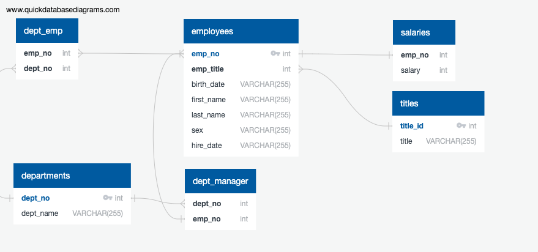

In this project, I analyzed CSV files of employee data to develop a database structure and create a table schema to best contain the data in those CSVs. I used Quick Database Diagrams to sketch an ERD, including table relationships, key definitions, and data types.
After sketching the ERD, I wrote schema.sql to produce the desired database structure. Then, I used the CSV import function of PostgreSQL to import the data into my database.
For this part of the project, I wrote queries using joins, aggregates, group-by, and order-by.